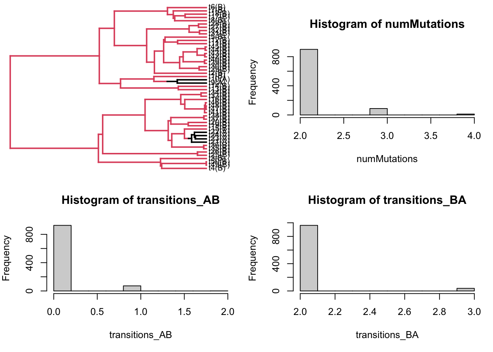

This code simulates stochastic character mappings on a fixed phylogenetic tree. In the real world, we would be given a phylogeny with tip data (diets of finches, geographic location of influenza, etc.). The goal would be to estimate quantities like the number of changes, the timing of changes, whether one trait is ancestral to the rest, and so on. This would involve fitting models to estimate the stochastic rate matrix describing discrete state changes, as well as the root states.
In this code, we are going to start by exploring how we would interpret estimates. This involves simulating character mappings on the phylogeny using the true values of the Markov chain model, and our goal is to see if we can count the number of state changes, describe timing of changes, etc.
Once we have a feel for how the model works, we will then try to do the harder task of fitting it to data.
Clear out the console:
rm(list=ls())# load in the package for stochastic character mapping:library(phytools)
Loading required package: ape
Loading required package: maps
# Set the number of stochastic character mappings to simulate:nsim =1000# Create a tree: (could modify this to load in a tree as well)tree <-pbtree(n=50, scale=1)
Specify a transition rate matrix for two states (A and B). In practice, we would want to estimate this from data. Let’s pretend we’ve done that step, and this can be taken as known without error:
We can scale down Q to have fewer transitions (for illustrative purposes)
Q <- Q/10
Simulate tip states on the tree using our stochastic rate matrix Q. In practice, this would be observed in data, and in many instances we could assume it is observed without error. For our purposes here, we simulate tip states from the model:
tip_states <-sim.Mk(tree, Q)
How many of each state do we oberve?
table(tip_states)
tip_states
A B
49 1
Simulate stochastic character maps nsim times using the tree, tip states, and our Q matrix: Note: don’t set model=Q, otherwise that just re-estimates Q. Need to specify Q=Q in the make.simmap call.
We simulate from the root to the tips. We have to specify an initial condition at the root:
Pi <-c(.5,.5)# Run the sims!sims <-make.simmap(tree, tip_states, Q=Q, pi=Pi, nsim=nsim)
make.simmap is sampling character histories conditioned on
the transition matrix
Q =
A B
A -0.1 0.1
B 0.1 -0.1
(specified by the user);
and (mean) root node prior probabilities
pi =
A B
0.5 0.5
Done.
# Uncomment this to visualize the different character mappings:#par(mfrow=c(1,1))#for(i in 1:nsim){# plot(sims[[i]])# Sys.sleep(.0002)#}# Let's start by summarizing the number of mutations that happen across the whole tree:counts <-lapply(sims, countSimmap)numMutations <-sapply(counts, function(x) x$N)transitions <-lapply(counts, function(x)x$Tr)transitions_AB <-sapply(transitions, function(x) x[1,2])transitions_BA <-sapply(transitions, function(x) x[2,1])
Let’s plot an example character mapped tree, and histograms of number of mutations:
sim = sims[[1]]# overall, and by typepar(mfrow=c(2,2))## plot the character mapped treesim$tip.label <-paste(sim$tip.label, "(", tip_states, ")", sep="")plotSimmap(sim, fsize =0.8)
no colors provided. using the following legend:
A B
"black" "#DF536B"
## plottig make.simmap objects messes up margins, let's reset these:par(mar=c(5,4,4,1))## histogram of total mutations:hist(numMutations)## histogram of mutations A -> Bhist(transitions_AB)## histogram of mutations B -> Ahist(transitions_BA)

Exercises:
1.
Try changing the initial condition at the root (Pi, also called the “root prior”) to see how results change
2.
Look at the logL values in the sims. What do you think that describes? In particular, do you think the reported logL is P(tip data | Q), or P(tip data, character mapping | Q)?
2.a.
Create a new sims list, replacing Q with jitter(Q). What do you notice about the logL values?
2.b.
Create a new sims list, replacing Pi with different values. What do you notice about the logL values in this case?
3.
In light of the previous questions, can you figure out what the form of the log-likelihood is for make.simmap? (is it actually a likelihood, or is it a conditional likelihood?) That is, do you think the form of the log-likelihood is P(tip data | Q) or P(tip data | Q, Pi) ?
4.
Calculate the log-likelihood of the tip data on the tree under the assumed Q matrix. Compare the log-likelihood reported from ace with the log-likelihood returned by make.simmap. What do you notice?
5.
Do ace and make.simmap use the same log-likelihood? If not, what is the key difference? Use ?ace and ?make.simmap in your investigation.